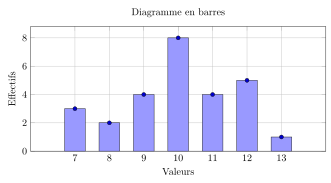
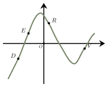
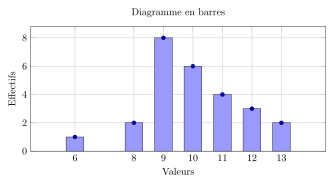
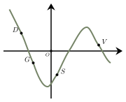

Calcul en contexte et statistiques
QCM à réponse unique — choisis une proposition pour révéler la correction immédiatement.
Même QCM, sans correction — ton score apparaît une fois toutes les questions complétées.
En notant $D$ la dépense totale, Alice a dépensé $\dfrac{2}{9}D$ et Louis, $\dfrac{7}{9}D$.
Leur participation équilibrée doit être de $\dfrac{1}{2}D$ chacun.
Alice doit donc donner à Louis la somme de $\dfrac{1}{2}D - \dfrac{2}{9}D = \dfrac{5}{18}D$.
La fraction de la dépense totale que Alice doit donner à Louis est donc $\boldsymbol{\dfrac{5}{18}}$.
La bonne réponse est la réponse A.
On cherche parmi les propositions, lesquelles peuvent donner, après développement, l’expression de l’énoncé.
$\begin{aligned}
\left (-4x-2\right)\left(2x+3\right)&=-8x^2-12x-4x-6\\\\
&=-8x^2-16x-6\\\\
\end{aligned}$
La bonne réponse est la réponse B.
Le carré de $2$ est $2^2 = 4$.
Le double de $4$ est $2 \times 4 = 8$.
Le double du carré de $2$ est égal à $\boldsymbol{8}$.
La bonne réponse est la réponse D.

Quel est l’effectif total de cette classe ?L’effectif total est le nombre de notes représentées dans l’histogramme.
On peut le calculer en additionnant les effectifs de chaque barre.
Les effectifs sont :
$\bullet$ $3$ pour la note $7$
$\bullet$ $2$ pour la note $8$
$\bullet$ $4$ pour la note $9$
$\bullet$ $8$ pour la note $10$
$\bullet$ $4$ pour la note $11$
$\bullet$ $5$ pour la note $12$
$\bullet$ $1$ pour la note $13$.
Ici, on trouve un effectif total de $\boldsymbol{27}$ élèves.
La bonne réponse est la réponse C.
On lance un dé à 4 faces. La probabilité d’obtenir chacune des faces est donnée dans le tableau ci-dessous :
| Numéro de la face | 1 | 2 | 3 | 4 |
|---|---|---|---|---|
| Probabilité | $\frac{1}{6}$ | $0,3$ | $\frac{1}{5}$ | $x$ |
La somme des probabilités doit être égale à 1. Comme $0{,}3=\dfrac{3}{10}$, on a :
$\begin{aligned} x&=1-\left(\dfrac{1}{6}+\dfrac{3}{10}+\dfrac{1}{5}\right)\\\\ x&=1-\left(\dfrac{5}{30}+\dfrac{9}{30}+\dfrac{6}{30}\right)\\\\ x&=1-\dfrac{2}{3}\\\\ x&=\boldsymbol{\dfrac{1}{3}} \end{aligned}$
La bonne réponse est la réponse A.

L’inéquation $x\times f(x) > 0$ est vérifiée par :L’inéquation est vérifiée lorsque $x$ et $f(x)$ sont de même signe, c’est-à-dire lorsque $x$ et $f(x)$ sont tous les deux positifs ou tous les deux négatifs.
Ici, $x_D$ est négatif et $f(x_D)$ est négatif. Aussi, $x_R$ est positif et $f(x_R)$ est positif.
L’inéquation est donc vérifiée pour $\boldsymbol{x_D \text{ et } x_R}$.
La bonne réponse est la réponse B.

Quel est l’effectif total de cette classe ?On lance un dé à 4 faces. La probabilité d’obtenir chacune des faces est donnée dans le tableau ci-dessous :
| Numéro de la face | 1 | 2 | 3 | 4 |
|---|---|---|---|---|
| Probabilité | $\frac{3}{10}$ | $0,35$ | $0,1$ | $x$ |

L’inéquation $x\times f(x) < 0$ est vérifiée par :